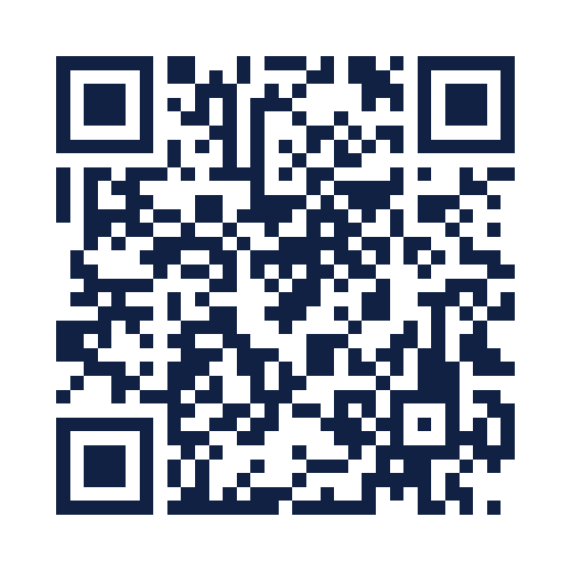
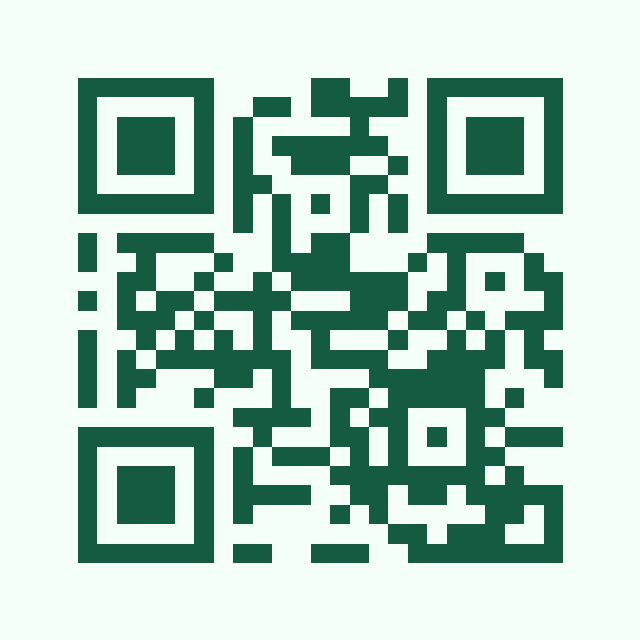

Website
Recognises https://example.com and opens that address.
Download PNG · Download SVG · View SVG for scanning


Exact expected payload
https://example.com/
Device supplied by you: OnePlus NORD CE 6 5G. Results: pending your physical scans.
Open this page on your computer. Use your phone camera (or a QR scanner you already use), point at one code at a time and compare with the expected result. Avoid glare. Tell us which camera/scanner you used.
For each case, test the on-screen code, the downloaded PNG opened on your computer, and the SVG. Report pass/fail separately.
Recognises https://example.com and opens that address.
Download PNG · Download SVG · View SVG for scanning
https://example.com/
Shows CampusQR test and வணக்கம் 👋, preserving the text.
Download PNG · Download SVG · View SVG for scanning
CampusQR test வணக்கம் 👋
Opens a draft addressed to hello@example.com, with subject CampusQR & test? and two body lines. Do not send.
Download PNG · Download SVG · View SVG for scanning
mailto:hello@example.com?subject=CampusQR%20%26%20test%3F&body=Line%201%0ALine%202
Recognises +12025550143 or opens the dialer with that number. Do not call.
Download PNG · Download SVG · View SVG for scanning
tel:+12025550143

Recognises CampusQR;Demo as Wi-Fi. This fictional network will NOT connect; recognition is the only check here.
Download PNG · Download SVG · View SVG for scanning
WIFI:T:WPA;S:CampusQR\;Demo;P:demo\:pass123;H:false;;

Recognises https://example.com/forest. The page itself may not exist; verify the decoded address.
Download PNG · Download SVG · View SVG for scanning
https://example.com/forest
In CampusQR, enter a network you own or a test hotspot on another device. Scan with your OnePlus and check whether it joins. Keep credentials on your device; do not send them to us. The fictional Wi-Fi above only tests recognition.
Scanner used: Website: screen / PNG / SVG Text: screen / PNG / SVG Email draft: screen / PNG / SVG Phone: screen / PNG / SVG Demo Wi-Fi recognition: screen / PNG / SVG Forest preset: screen / PNG / SVG Real Wi-Fi connection: pass / fail / not tested Any incorrect content or error: